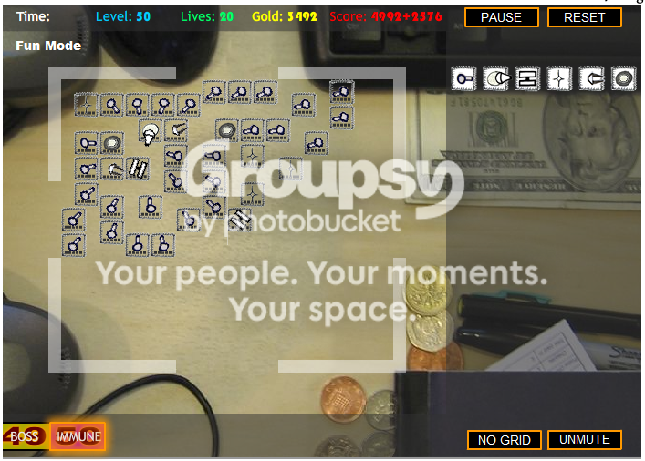
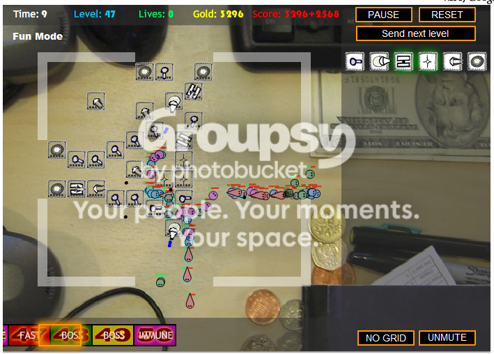

#15390 1 2007-05-27T15:58:58Z DemonzLunchBreak It's a premise similar to warcraft three; there are enemies trying to march through the level, and you have to build a maze to stop them.
It's free, fun, and addictive. Try it out!
http://www.handdrawngames.com/DesktopTD/#324665 2 2007-05-27T17:04:08Z BeSilence Ive played that i beat it.
#324697 3 2007-05-27T18:51:24Z Psycho_CO FUN.
PERIOD.
#324699 4 2007-05-27T18:53:20Z Exüberance Heh. 10k gold mode on FUN is so rediculously easy. It's awesome.
#324705 5 2007-05-27T19:22:02Z Sketch War3.
I played that for so long, its 100x better than this. Even more, much more. It'll last you 3+ years guaranteed if you go on battle.net. Go get it, its awesome.
#324710 6 2007-05-27T19:37:57Z usaswim lol I did the 10k gold mode and I went insane and sent 35 rounds at one time, but the weapons weren't strong enough, and they were everywhere and upgraded to max

#324712 7 2007-05-27T19:51:20Z Exüberance If there was infinite gold option, I would fill the entire screen with sniper towers except for a 1x1 wide cross for the enemies to walk through.
I believe in overkill.
#324991 8 2007-05-28T16:21:38Z smartalco kinda cool, not quite to the level of warcraft TD's, but still fun
#325237 9 2007-05-29T04:52:49Z Sniperwhere DesktopTD is without a doubt the best tower defense game I've ever played.
#325311 10 2007-05-29T12:25:29Z Twistkill DesktopTD is without a doubt the best tower defense game I've ever played.
http://www.google.ca/search?hl=en&q=air+de...nG=Search&meta=
Another fun one.
#325361 11 2007-05-29T15:13:22Z CDotLeach I didn't really like the Air Defence one, but DTD was great fun

It rhymes

#325457 12 2007-05-29T20:51:37Z Samrat16 Yes, another good flash game!
The 10K gold mode is insane!!! Here was my setup:

I did like 10 rounds at a time and it really slowed down the flash game. More rounds than that, and I actually started losing lives.
#325496 13 2007-05-29T22:33:52Z Kablizzy I've got an almost-solid tactic going - I create a maze of turrets, and the creeps have to walk the entire area six times to make it through the maze, but the coolest part is one stretch, towards the end, I delete a turret, and it turns the whole pack around so that they head towards the newly-made hole. When they near the hole, I put the turret back up, and they turn around again. Lather, rinse, repeat until dead.
#325534 14 2007-05-30T00:00:57Z Sniperwhere I've got an almost-solid tactic going - I create a maze of turrets, and the creeps have to walk the entire area six times to make it through the maze, but the coolest part is one stretch, towards the end, I delete a turret, and it turns the whole pack around so that they head towards the newly-made hole. When they near the hole, I put the turret back up, and they turn around again. Lather, rinse, repeat until dead.
Genius. Pure genius.
#325842 15 2007-05-30T22:17:15Z Cerberus This game is pure genius.
#325850 16 2007-05-30T22:35:20Z Navick I've played this a lot before on Kongregate.
#325869 17 2007-05-30T23:41:53Z usaswim It worked very well because some creeps couldn't go over the weapons, so they had to navigate through the maze of weapons.
Attachment (lost): post-27-1180568513.png
#325872 18 2007-05-30T23:54:30Z Blackeagle13 FUN.
PERIOD.
Menstruation is the nastiest thing girls do. period.
#325880 19 2007-05-31T00:34:23Z usaswim It worked very well because some creeps could go over the weapons, so they had to navigate through the maze of weapons.
Attachment (lost): post-27-1180571663.png
#325955 20 2007-05-31T08:31:49Z Kablizzy Also, we now have a group for highscores - Thank Sucker for that. When you submit your highscores, and it asks you to add it to a group, the group is 'Metanet.' (Duh)
#326087 21 2007-05-31T21:26:45Z AV_Ultima K, im going to do it again, then sumbit it into the group.

Heres the maze i use:

You can use it if you want... i guess.
#326150 22 2007-06-01T02:59:43Z Kablizzy I don't get the Dart Towers at all. They seem horridly ineffective, especially after wave 40. I'd show you guys the one I've been using, but I'm too tired tonight.
#326155 23 2007-06-01T03:08:01Z Exüberance I don't get the Dart Towers at all. They seem horridly ineffective, especially after wave 40. I'd show you guys the one I've been using, but I'm too tired tonight.
I

dart towers for the range. Of course, sniper towers are the best but then you have to upgrade to level 6.
I like the splash turrets the best.
#326165 24 2007-06-01T03:29:31Z usaswim The splash turrets are rather expensive to upgrade. I prefer lots of sniper towers. and Ultima - At first glance I thought that was a periodic table.
#326167 25 2007-06-01T03:33:37Z Kablizzy I don't get the Dart Towers at all. They seem horridly ineffective, especially after wave 40. I'd show you guys the one I've been using, but I'm too tired tonight.
I dart towers for the range. Of course, sniper towers are the best but then you have to upgrade to level 6.
I like the splash turrets the best.
Well, yeah, but they do literally nothing to bosses. And Typhoon towers deal with absolutely everything except for Boss 49.
And, shockingly enough, this was my best setup to-date. I don't know how.

#326171 26 2007-06-01T03:39:01Z iangb Mine isn't perfect.... but it's pretty damn good. Pre-start, 10k mode.
The one I made on my first go was bette,r but that was a few weeks ago and I can't remember how it went. It was more equal, though - there was no point (other than the crossover) where the creep paths met each other.
EDIT: I remember how it was better... there were also maxed splash towers next to the maxed bash towers, so stunned creeps got quickly wiped out.
Either way, I put all 50 levels of creeps through this map at once, and the only ones that made it through were the final bosses. I win.
Attachment (lost): post-27-1180669141.jpg
#326178 27 2007-06-01T04:43:26Z Kablizzy Nice. You gave me the idea, so I gave it a shot. You also made me realize how Dart Towers work, and why they work.
In either case, I hate to be the guy to one-up you, but this was my fun mode, 10k, same scenario, post-game, all 50 levels at once. Not a thing made it half way through.
Attachment (lost): post-27-1180673083.jpg
#326185 28 2007-06-01T06:18:39Z Atilla Those who like this game may also wish to give
Curator Defence a try.
#326329 29 2007-06-01T20:01:20Z ZZ9 This doesn't work very well. Past level 30 or so, there are more than 2 waves at once.

#326342 30 2007-06-01T20:34:13Z Samrat16 I sent all 50 levels through at once with this setup:
Beginning:

Setup:

The only thing that got through was the 2 spawn bosses, which spawned into 4 separate parts and got through.
#326351 31 2007-06-01T21:14:47Z usaswim Here was my path. For the flying, buy some swarm towers and upgrade all the way. I used 4. Make a maze and the best strategy is to use a weapon more than once. Frost towers upgraded all the way are very useful as well as quake towers (bash towers). ICBM towers are ok, i guess. Definitely lots of pellet towers. I went through this entire setup without buying or upgrading anything. I sent about 20 levels at a time. The flying levels were the hardest, I guess. I managed with 20 lives left. And plenty of gold.
WARNING: Swarm towers take a lot of time to upgrade, so don't upgrade from 4 to 5 until there aren't anymore flying on the field.

#326494 32 2007-06-02T05:53:38Z Atilla Quake towers + overlap + slow = ouch. This thing somehow managed to stop 50 waves at once, despite the relatively low number of towers, short path, and generally shoddy planning. This just emphasizes the fact that it's not worth making creeps take the long way around unless you've got something to blast them while they do so. This setup could be improved fairly easily, I think... maybe four quake towers in the middle, make the path a little better, and spend the extra cash on more ICBMs. Or perhaps extra squirts to help take out the boss enemies. Those annoying spawn-bosses were the only things that looked remotely close to getting through.
Attachment (lost): post-27-1180763618.png
#326506 33 2007-06-02T10:46:08Z Cerberus Really fun game. Mine isn't that great...

#326511 34 2007-06-02T11:01:13Z George I love it. It's really addictive. I'm having trouble beating it though (I keep on reaching level 50 and dying). Does anyone have any tips on beating it?
#326610 35 2007-06-02T15:51:54Z usaswim Are you playing in fun mode or the real game?
#326808 36 2007-06-03T01:08:13Z Kablizzy Level 50 should be a cinch. It's 48 and 49 that are really the bitches. Dart Towers are decent for level 50, but six Typhoon towers kill everything equally as well.
#326879 37 2007-06-03T06:03:43Z Cerberus Here's another. This one actually worked pretty well. It could be improved with maybe a frost tower near the end. The only thing that got through for me was one small spawn creep thing.

#326894 38 2007-06-03T07:41:15Z George Level 50 should be a cinch. It's 48 and 49 that are really the bitches. Dart Towers are decent for level 50, but six Typhoon towers kill everything equally as well.
Yes, but I'm already at about four or five lives by the time I reach the last three levels. The bosses just past through without any trouble, so it leaves me very vulnerable against the last group of creeps.
#327007 39 2007-06-03T17:38:55Z usaswim Awww shit! Lesson learned - never send levels 15-45 all at once.

#327161 40 2007-06-04T00:00:11Z Kablizzy Alright, fellas. I now hold top scores on medium and hard difficulties. Let's see if ya'll can do any better.
#327163 41 2007-06-04T00:01:36Z usaswim There are highscores? Where?
#327210 42 2007-06-04T01:44:06Z Kablizzy #327212 43 2007-06-04T01:48:34Z George Alright, fellas. I now hold top scores on medium and hard difficulties. Let's see if ya'll can do any better.
*Looks at Blizz's scores*
Need better tactics...
#327217 44 2007-06-04T01:51:58Z Kablizzy And if you look at global highscores, well... o-O
I'ma try a different tactic here, see if it works out well enough.
#328010 45 2007-06-06T14:33:53Z Shark Very fun game - Watch out blizz, I'm catching up to you!
#328054 46 2007-06-06T16:57:04Z epigone woot! this is really quite fun!
#328072 47 2007-06-06T17:56:12Z AV_Ultima Im 4th now... OH! ITS ON!

")
*plays*
#328082 48 2007-06-06T18:09:19Z BeSilence How do we submit the scores to this group?
#328084 49 2007-06-06T18:11:54Z ZZ9 It asks you to give a group name when you submit a score.
#328085 50 2007-06-06T18:14:46Z DemonzLunchBreak It asks you to give a group name when you submit a score.
"Metanet."
#328090 51 2007-06-06T18:19:44Z BeSilence It is very scary when you send them all at once every single one.
#328091 52 2007-06-06T18:20:49Z usaswim Here's a question I've always wanted to ask:
Instead of spending thousands or millions of dollars on 1 in. x 1 in. figurines, why can't you just drop your History book on them? And where do they come from anyway?
#328092 53 2007-06-06T18:23:45Z AV_Ultima ^umm? lol?
Im 200 off Blizz's score!
So close!
And no, i will not use another map design except my current.
 Edit:
Edit: Wow, my map upgraded:

Fun mode > 10K > all 50 levels at once.
It doesnt take that much towers to do this. Just click the send level button fast to get more points. Sooner the better.
#328099 54 2007-06-06T18:54:16Z Shark I now hold second place in normal. Can't get 6600 however hard I try, though.
#328174 55 2007-06-06T21:25:33Z AV_Ultima Yay! Now i hold second place... but...
Normal
Pos Name Lives Score
1 Kablizzy 18 6652
2 abSoLuTe.ulTiMa 18 6644
8 points OFF! OH! The horror!
I missed 1 fly creep(7 pts.), and 1 boss fly creep(140 pts.).
I could have gotten the 1 fly creep and lost by 1 point...
That would have been cool.

#330833 56 2007-06-13T13:29:26Z Shark 0wned the medium mode highscores with a 6840 just now, going for hard.
#331041 57 2007-06-14T00:08:08Z Kablizzy NO. OH GOD NO. *Grumble*
#331042 58 2007-06-14T00:12:31Z usaswim Here's a question I've always wanted to ask:
Instead of spending thousands or millions of dollars on 1 in. x 1 in. figurines, why can't you just drop your History book on them? And where do they come from anyway?
I believe my question was overlooked...
#332466 59 2007-06-18T04:59:13Z Agent 001/7 I prefer this version:
Vector TD
The desktop version is fun too.
#332505 60 2007-06-18T08:54:25Z Ad 
Try 4K Gold, a good challenge. I scored 6921.
I tried this 10k thing too. First try:
Attachment (lost): post-27-1182159231.png
#334676 61 2007-06-23T01:06:39Z Luminaflare 1.5 is out
#335453 62 2007-06-25T00:10:58Z usaswim damn, the 60's are so hard...
#335635 63 2007-06-25T18:07:59Z Kablizzy They really are. I think the farthest I've gotten is 68 or so.
#335654 64 2007-06-25T19:41:00Z BeSilence Really i've gotten to 80 then i got bored and quit.
#335702 65 2007-06-25T21:33:19Z Patsy7z7 Nothing...NOTHING beats warcraft III Poker Tower Defense. Really, its the two best games combined into one super-game.
#335781 66 2007-06-26T02:24:39Z Kablizzy Okay. Thanks for sharing.
Back on topic, though, I'm kinda fluffed over the new version - It doesn't seem the same, it's harder to get into as the old one was.
#335785 67 2007-06-26T02:30:35Z Animator And those dark creeps are a pain.